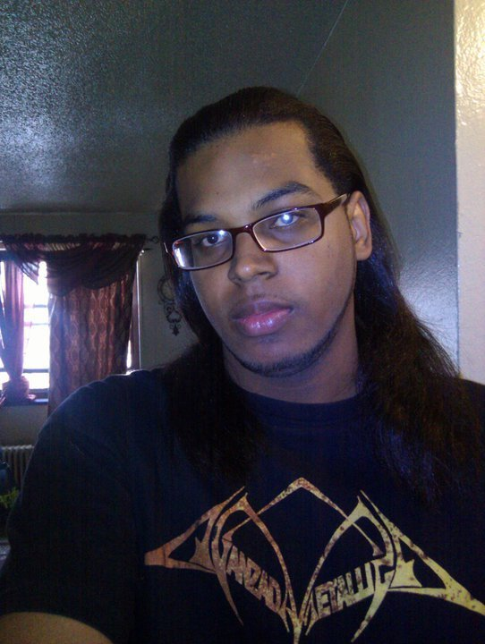

General info about me

Hello, just call me Rafasé or R.282 for short. If you want to know what it means then read this journal entry.
I'm from the Dominican Republic. I graduated from Bronx Community College and currently attend Lehman College
for my BS in computer science. It may be a bit obvious but I live in the Bronx, New York.
I'm a single father. Anyways you are welcome to befriend me. I'm the type of person people tend to call boring
other get fascinated with. If you ask me I'll say I'm boring. ;)
I have seen so many things in life and know so many random facts, that it is actually not very easy to amuse me.
You may say I'm easily distracted, I just spent the most part of my time enjoying or suffering my thoughts.
I suggest you make sure you have my attention before you start talking to me. However, I have a bad habit of
making people repeat what they just told me. It is to make sure I did not misunderstand or just really
didn't get you the first time. As my English improves this issue has been fading away.
I like computers, electronic devices ( Technology in general ) I love music, a lot of different styles,
but my favorites are rock, metal, folk, and all that has to be with goth and industrial.
Everyone says I'm weird, even my parents, I like when they say that rather than
"hey you are like this friend I know..." It gets on my nerves!
Sometimes you may bribe me with food. Don't get me wrong, I just like tasty food.